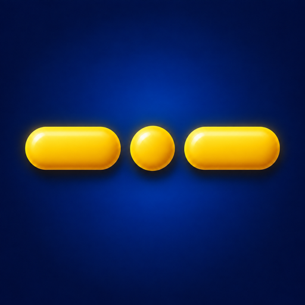
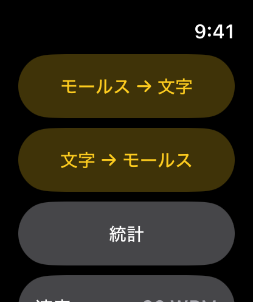
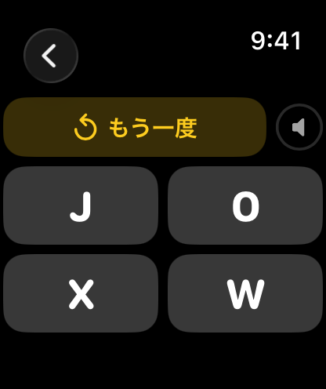
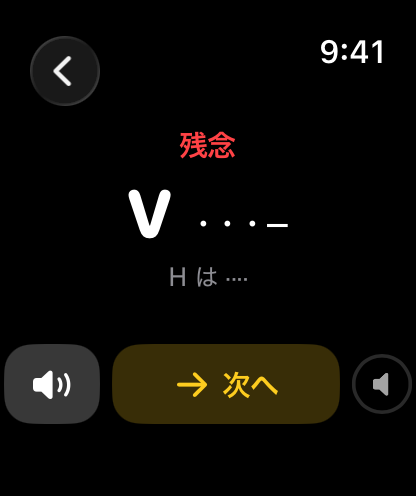
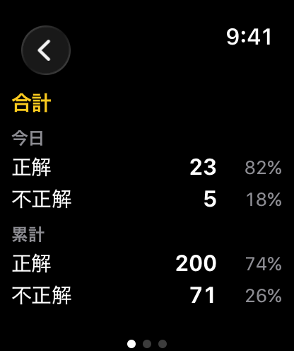
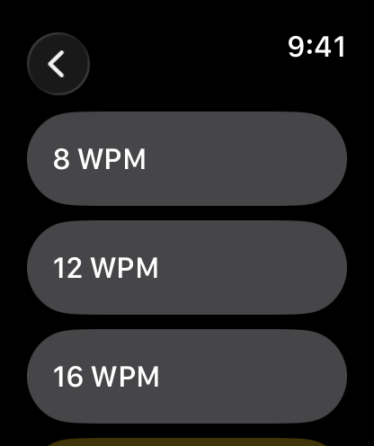

モールス先生 ウォッチ
Apple Watchでモールス信号を練習できます。音を聞いて文字を選ぶ練習と、表示された文字を点と線で入力する練習ができます。回答後は正解を確認し、もう一度聞き直せます。対応する文字はアルファベットのA〜Z。再生速度は8〜25 WPMで調整できます。iPhoneは必要ありません。
watchOS 8以降が必要です。
ダウンロード

サポート
ご質問、不具合の報告、アプリの使い方でお困りのことがあれば、お気軽にご連絡ください。いただいたメッセージはすべて確認しています。
お問い合わせの前に
お問い合わせの前に、以下をご確認ください。
- アプリが反応しない場合 Digital Crown を2回押して起動中のアプリを表示し、モールス先生のカードを上にスワイプして終了します。その後、アプリ一覧から開き直してください。
- 音が鳴らない場合 練習画面で Digital Crown を回して音量を上げてください。音は Apple Watch のスピーカー、または接続した Bluetooth イヤフォンから再生されます。
- 速すぎて聞き取れない場合 メニューの速度から遅い速度を選んでください。初めての場合は、8 WPMから試してみてください。
- 「文字 → モールス」で入力した符号が不正解になる場合 符号の数と順番をご確認ください。「確認」を押す前なら戻すで最後の1つを消せます。
よくあるご質問
- iPhone がなくても使えますか？
はい。Apple Watchだけで使えます。iPhoneは必要ありません。 - どの文字に対応していますか？
ITU-R M.1677-1 で定められた国際モールス符号のアルファベット A〜Z の26文字です。数字と記号はこのバージョンには含まれていません。 - 速度はどのように決まりますか？
符号を再生する速さを、1分あたりの語数（WPM）で表しています。基準となる単語は「PARIS」です。8 WPMでは点の長さが150 ms、25 WPMでは48 msになります。速度の一覧から数値をタップすると、その速さのサンプルを聞けます。 - 回答に制限時間はありますか？
ありません。回答する前に何度でも聞き直せます。回答後は正しい符号と自分の回答を確認でき、もう一度聞くこともできます。 - 「文字 → モールス」ではタップごとに音が鳴りますか？
はい。タップすると、点や線に対応する音が鳴ります。入力しながら符号を音で確認できます。 - どの回答が統計に含まれますか？
回答した問題だけが集計されます。聞き直した回数や、回答せずに終了した問題は含まれません。 - 設定は保存されますか？
はい。選んだ速度は保存されます。アプリを開き直しても設定は変わりません。 - データは収集されますか？
いいえ。収集も共有も一切行っていません。速度の設定と練習の成績は Apple Watch 内にのみ保存されます。
使い方






モールス → 文字
- モールス → 文字を開くと、すぐに文字の符号が鳴ります。
- もう一度聞きたいときは、もう一度をタップします。
- 4つの文字から1つをタップして答えます。
文字 → モールス
- 文字 → モールスを開くと、文字が表示されます。
- 点(●)と線(▬)のキーで符号を打ち込みます。タップするたびに音が鳴ります。
- 戻す(⌫)で最後の1つを消します。
- 確認(✓)で答えます。
答え合わせ
回答すると、正解または残念と表示され、出題された文字の正しい符号と自分の回答を確認できます。もう一度聞くにはスピーカーのボタンを、次の問題に進むには次へをタップします。
速度
再生速度を8〜25 WPMで設定できます。一覧から速度を選ぶと、その速さのサンプルを聞けます。初めはゆっくりとした速度で練習し、慣れてきたら少しずつ上げてみてください。選んだ速度は両方の練習に適用され、アプリを閉じても保存されます。
統計
統計では今日と累計の正解数・不正解数を、それぞれ割合とともに確認できます。横にスワイプすると合計、モールス → 文字、文字 → モールスの3ページを切り替えられます。
モールス符号一覧
| 文字 | 符号 | 文字 | 符号 |
|---|---|---|---|
| A | · ▬ | N | ▬ · |
| B | ▬ · · · | O | ▬ ▬ ▬ |
| C | ▬ · ▬ · | P | · ▬ ▬ · |
| D | ▬ · · | Q | ▬ ▬ · ▬ |
| E | · | R | · ▬ · |
| F | · · ▬ · | S | · · · |
| G | ▬ ▬ · | T | ▬ |
| H | · · · · | U | · · ▬ |
| I | · · | V | · · · ▬ |
| J | · ▬ ▬ ▬ | W | · ▬ ▬ |
| K | ▬ · ▬ | X | ▬ · · ▬ |
| L | · ▬ · · | Y | ▬ · ▬ ▬ |
| M | ▬ ▬ | Z | ▬ ▬ · · |
法的情報
プライバシーポリシー
最終更新: 2026年9月
はじめに
モールス先生 ウォッチをご利用いただきありがとうございます。当社はお客様のプライバシーを尊重し、保護することをお約束します。本プライバシーポリシーでは、当社が収集する情報、この場合は収集しない情報の種類と、プライバシーを守るための方法について説明します。
収集しない情報
モールス先生 ウォッチは、データを一切収集しないという原則のもとに設計されています。お客様の個人データを収集、保存、利用、共有、転送することはありません。アプリはすべて Apple Watch 上で動作し、サーバー上でデータを処理または保存することはありません。
本アプリが Apple Watch 内に保存するのは、選択した練習速度と、練習の成績(今日と累計の正解数・不正解数)の2つだけです。これらは Apple Watch 内にのみ保存され、どこにも送信されず、アプリを削除すると消去されます。
本アプリはネットワークに接続せず、アカウント登録、解析、広告、第三者製のコードも一切ありません。
第三者のサービス
モールス先生 ウォッチは、解析ツール、広告ネットワーク、ソーシャルメディアなど、いかなる第三者のサービスとも連携していません。第三者とデータを共有することはありません。
子どものプライバシー
当社はデータを一切収集していないため、児童オンラインプライバシー保護法(COPPA)など、子どものプライバシーに関するすべての関連規制を遵守しています。
本ポリシーの変更
本プライバシーポリシーは随時更新される場合があります。変更の有無について、このページを定期的にご確認ください。変更はこのページに掲載された時点で有効となります。
お問い合わせ
本プライバシーポリシーについてご質問やご提案がある場合は、次のアドレスまでお気軽にご連絡ください: support [at] hoshinosoftware [dot] com